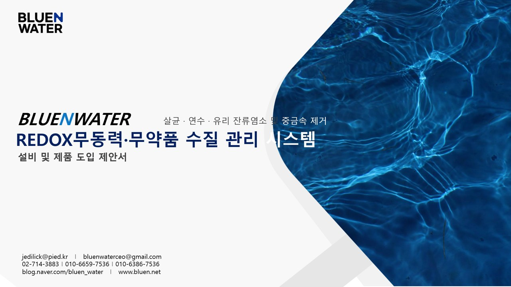

Building a water platform
with verified technology assets.
BLUE N WATER connects catalyst materials, adsorption media, catalytic advanced oxidation, and mobile water treatment equipment into one technology platform. Government R&D programs and the patent portfolio support BLUE BOX and AQUACOM as scalable infrastructure technologies.
Government validation history
Confirmed government support and technology development history based on the business plan.
Eco Startup
Korea Environmental Industry & Technology Institute
Rapid purification / KRW 86.0M
Re-Challenge Success Package
Korea Institute of Startup & Entrepreneurship Development
Micro water softener / KRW 58.0M
Startup Growth R&D
TIPA
Mobile water purification system / KRW 200.0M
Water Dream Program
Korea Water Cluster
C-AOP water treatment / KRW 14.0M
GBSA Global Growth Support
Gyeonggi Business & Science Accelerator
Cutting fluid purifier / KRW 1.50M
REDOX 무동력·무약품 수질관리
A REDOX chemical-free water management proposal visual has been added as a reference asset.

assets/images/projects/redox-proposal-cover.jpg
8 Registered Patents / 4 Applications
Registered patents and applications are organized by technology line. Public pages show essential information; detailed source documents can be provided through private PDFs or technical meetings.
Registered patents
| Technology | No. | Area |
|---|---|---|
| REDOX water softener | 10-1788122 | RaDX / REDOX water softening |
| Wastewater treatment device | 10-2055692 | Wastewater treatment equipment |
| Reduced water manufacturing device | 10-1987645 | Reduced water manufacturing device |
| Robot position estimation device and method | 10-1901586 | Robotics / localization asset |
| Sterilizing humidification air purifier | 10-2222205 | Air purification asset |
| Sterilizing humidification air purifier | 10-2297464 | Air purification asset |
| Disinfection device | 10-2653130 | Disinfection equipment |
| Styrofoam dissolution device | 10-2975496 | Resource circulation |
Patent applications / planned
| Technology | No. | Area |
|---|---|---|
| Environmental nonwoven fabric | 10-2024-0050903 | Functional fabric / filtration media |
| Rapid sterilizing water purification device | 10-2022-0112691 | Rapid purification |
| RaDX advanced material | Planned | Catalyst material advancement |
| Mobile water treatment system | Planned in Jul 2026 | BLUE BOX mobile water treatment system |
Material → Component → Equipment → Platform
BLUE N WATER combines materials, components and equipment into field-ready water infrastructure.
Material
RaDX Blue / RaDX Red / Bluechip Media
Component
RaDX Unit / adsorption media / modular chamber
Equipment
AQUACOM / BLUE BOX / Urban Mining system
Platform
Water reuse, disaster response, O&M, future life-support infrastructure